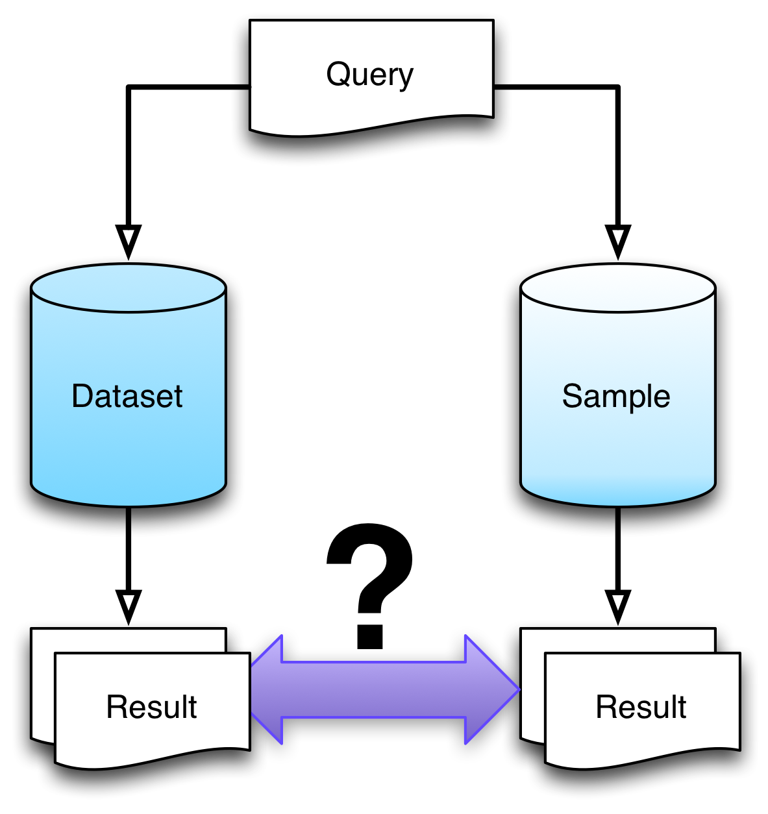

SampLD
Structural Properties as Proxy for Semantic Relevance
Laurens Rietveld
Presented by: Wouter Beekhttp://wouterbeek.github.io/sampld.html
Take-home message
Structural semantics: structural aspects of data (e.g., graph topology) encode part of the meaning of data.Problem statement
- Contemporary linked datasets (RDF) are too big to run on commodity hardware
- Client-server paradigm does not work for Semantic Web
- Applications use ≈ 2% of server-side data
| Dataset | #triples | #queries | coverage |
|---|---|---|---|
| DBpedia | 459M | 1640 | 0.003% |
| Linked Geo Data | 289M | 891 | 1.917% |
| MetaLex | 204M | 4933 | 0.016% |
| Open-BioMed | 79M | 931 | 0.011% |
| BIO2RDF (KEGG) | 50M | 1297 | 2.013% |
| Semantic Web Dog Food | 0.24M | 193 | 62.4% |
Problems
connection reliability
infrastructural costs
Solution: Relevance-Based Sampling
Find the smallest possible RDF subgraph that covers the maximum number of potential queries
- Can we determine which triples are relevant?
- Can we implement a scalable sampling pipeline?
Use cases
Application development (e.g., unit testing) [OpenPHACTS]
Run demos at conferences [OpenPHACTS,Data2Semantics]
Server offloading
Semi-informed sampling
2 sampling approaches
Informed Sampling
- Existing approaches
- Based on apriori knowledge of use (e.g., query logs)
- Not always available
- May not be indicative of use
Uninformed Sampling
- Novel approach
- No apriori knowledge needed
- Use structural information for determining relevance
Uninformed Sampling Approach
- Relevance determined through Network Analysis:
- PageRank
- In Degree
- Out Degree
- Relevance evaluated against known queries
Ranked List of Triples
-
Graph rewrite:

- Apply Network Analysis
-
Node weights → Triple weights
W(triple) = max(W(subject-term),W(object-term))
- Order triples by weight
- Extract sample
Evaluation

- Sample sizes: 1%-99%
- Baselines:
- Random Sample (10x)
- Resource Frequency
Naive evaluation does not scale
-
Numbers:
- 100 samples (i)
- 15 sampling methods (methodss): 5 graph rewrite methods; 3 network metrics
- 11 baseline methods (methodsb): 10 random samples; 1 resource frequency-sample
- 6 datasets of max. 459M triples
- Total: 1.4 trillion triples
- We cannot use contemporary Semantic Web tooling / triple stores for this!
Scalable Approach
- Retrieve which triples are used by a query (query grounding)
- Use a hadoop cluster to assign weights to all triples
- Analyze whether these (ground) triples are included in samples
- Scalable since queries are performed once
Incomplete results
| Dataset | |||
| Subject | Predicate | Object | Weight |
|---|---|---|---|
| :Laurens | :bornIn | :Amsterdam | 0.6 |
| :Stefan | :bornIn | :Berlin | 0.5 |
| :Berlin | :capitalOf | :Germany | 0.5 |
| :Amsterdam | :capitalOf | :NL | 0.1 |
| :Rinke | :bornIn | :Heerenveen | 0.1 |
| Triples used in query resultsets | ||
| Subject | Predicate | Object |
|---|---|---|
| :Laurens | :bornIn | :Amsterdam |
| :Amsterdam | :capitalOf | :NL |
| :Stefan | :bornIn | :Berlin |
| :Berlin | :capitalOf | :Germany |
Nifty optimizations
E.g., not all triples are needed for answering ground queries
SELECT DISTINCT ?city WHERE {
?university :inCity ?city ;
:rating ?high .
}
:university1 :inCity :london . :university1 :rating :high . :university2 :inCity :london . :university2 :inCity :high .
Results
Observations
- 'Plateaux': some triples are required for answering a large number of queries
- Network metrics can often identify those triples
-
E.g., DBpedia:
- Good: Path + PageRank
- Bad: Path + Out Degree
- 2/3 queries require literals (out-degree 0)
- # properties vs 'Context Literals' rewrite method
- # query triple patterns (query complexity)
Conclusion
- Scalable pipeline for network analysis + rewrite methods (1,4 trillion triples)
- Query logs are too small to distill significant correlations
- Topology of the graphs can be used to determine good samples
- Mimic semantic relevance through structural properties, without an a-priori notion of relevance